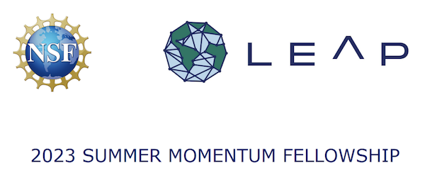

Press
Selected coverage.

2023 Summer Momentum Fellowship
NSF STC LEAP Fellowship to study aerosols with GNNs
Machine learning facilitates “turbulence tracking” in fusion reactors
Research into tracking blobs in tokamak gas puff imaging
Hacking into a sustainable energy future
MIT EnergyHack 2019